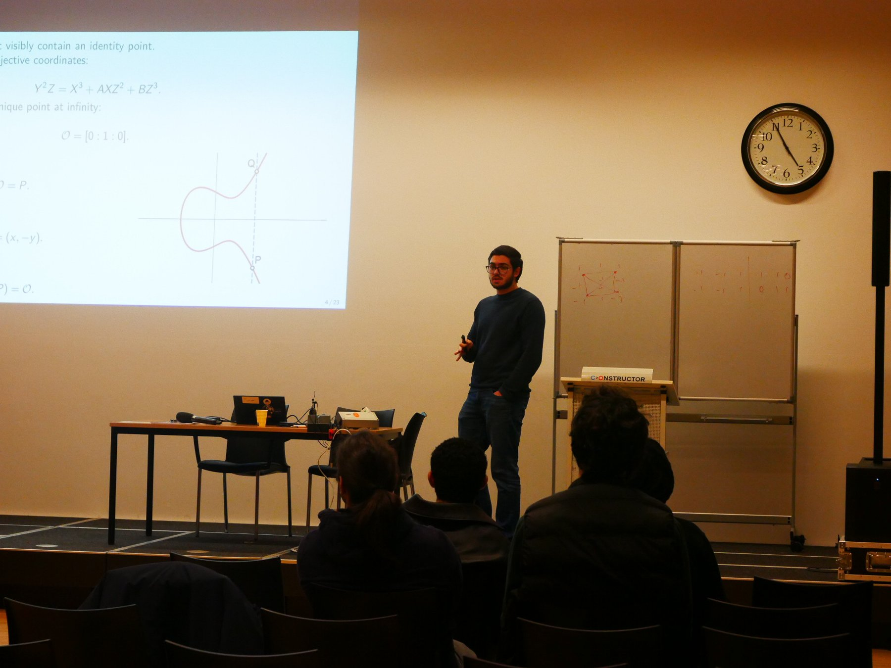
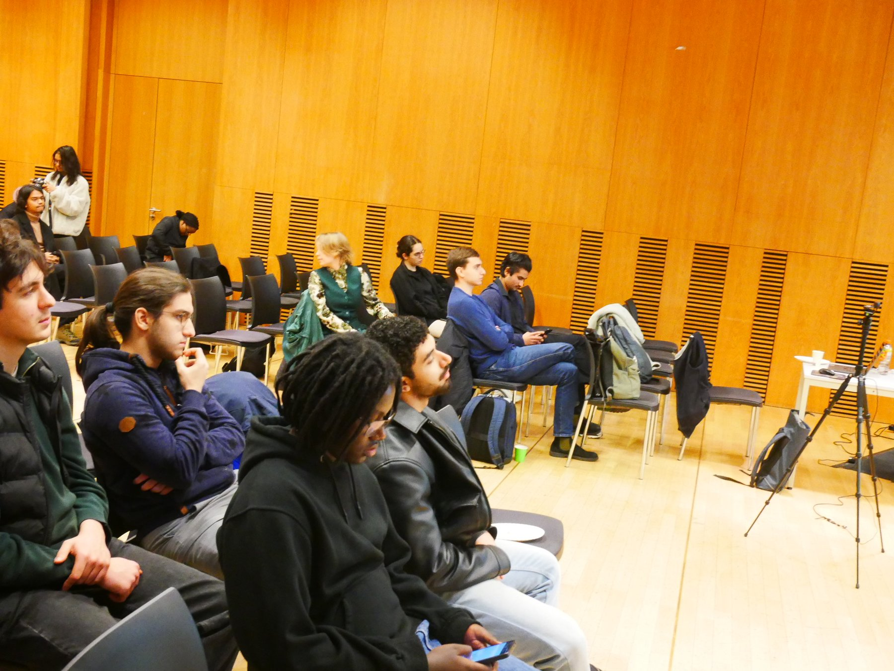
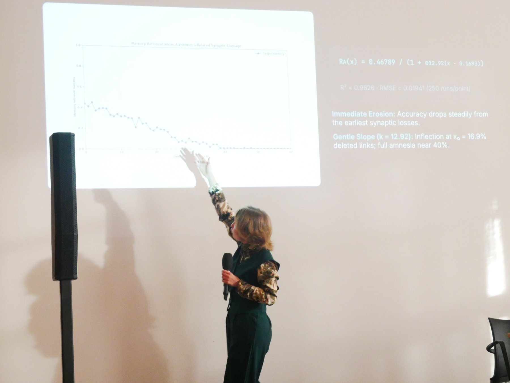
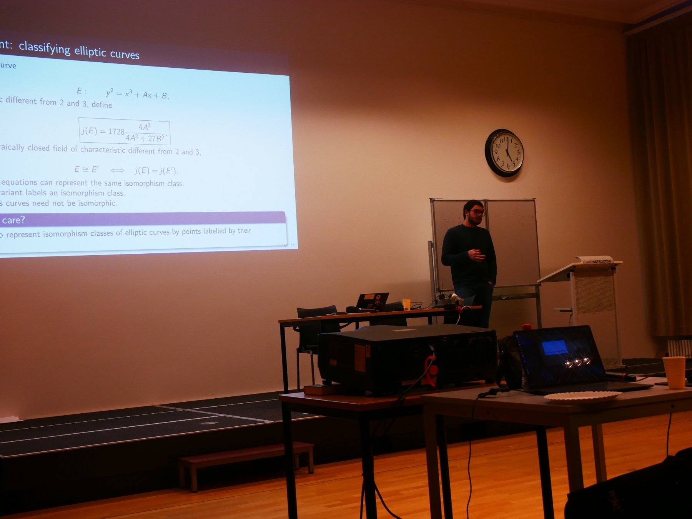
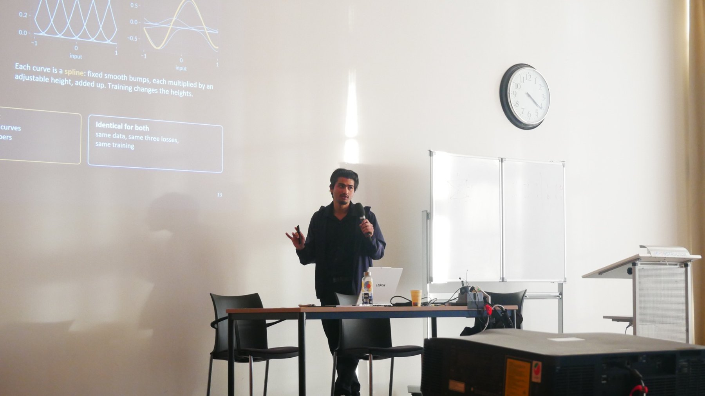
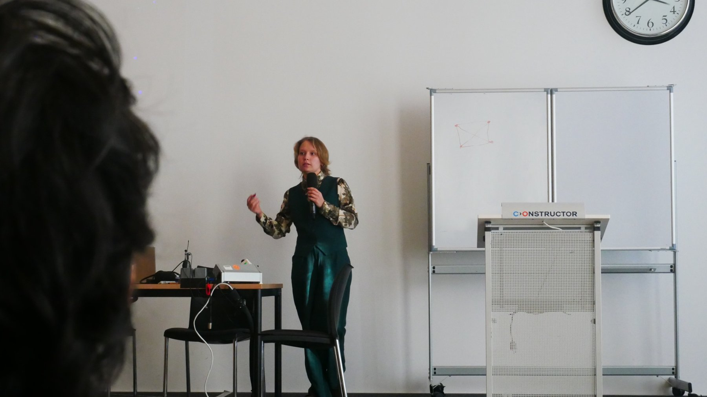
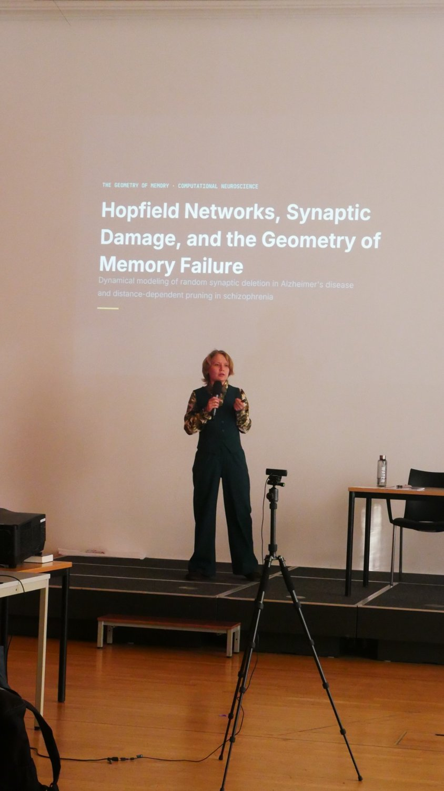
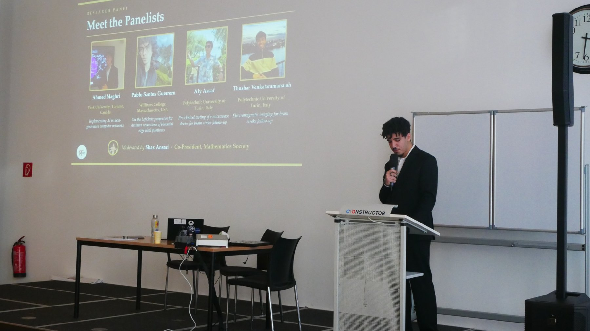
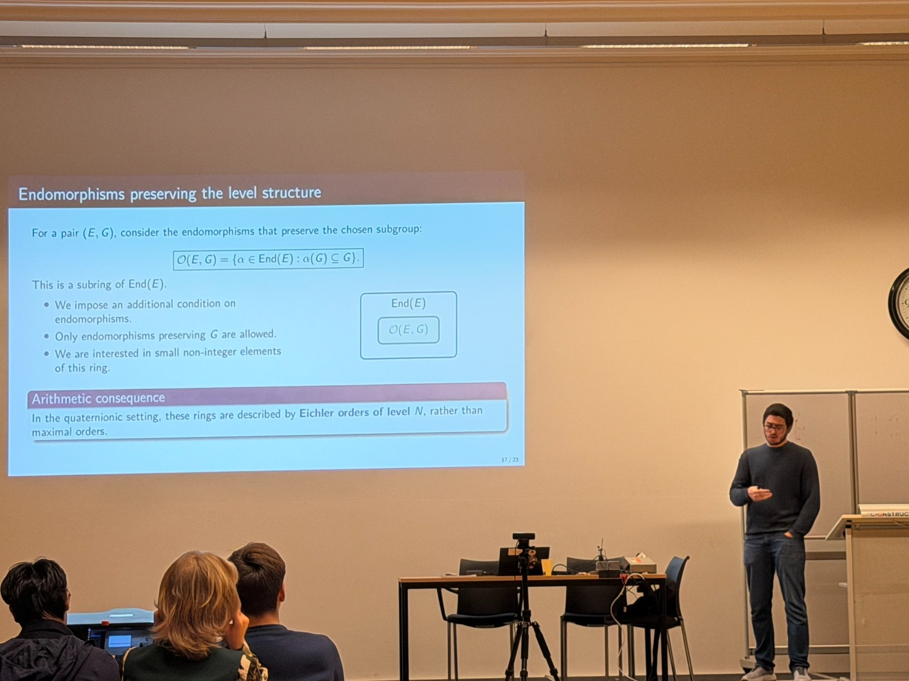
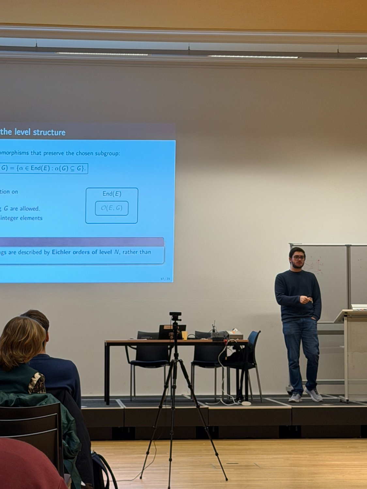

Implementing AI in next-generation computer networks.
14th November 2026 · 14:00 · IRC East Wing
The sixth Mathematics Undergraduate Seminar brought students together for an afternoon of original research, ambitious questions and conversations across mathematics, artificial intelligence, computational neuroscience and robotics. The seminar is built around a simple idea: undergraduate students should have the opportunity not only to learn research, but to do it and share it.
From modeling how memories break down to reconstructing physical systems from noisy observations and exploring the geometry of elliptic curves, UGS VI showcased how mathematical thinking connects seemingly distant disciplines.
Tatiana Egorova

What happens to a memory when connections between neurons disappear? Using Hopfield networks—mathematical systems that store patterns as stable states—this project explored two different models of synaptic disruption. Random deletion of connections was used as a simplified model associated with Alzheimer’s disease, while distance-dependent pruning represented a mechanism investigated in schizophrenia.
Simulations tested whether a network could recover an original memory after it had been partially disturbed. The striking result was that different patterns of damage produced different patterns of memory failure: random deletion led to a comparatively gradual decline, whereas the pruning model initially tolerated some changes before recall performance fell much more sharply. These are findings from a simplified computational model, not clinical predictions.
Undergraduate robotics research presentation

How can we infer the hidden parameter of an oscillating system when all we have is noisy measurements? Starting with the Van der Pol oscillator—a model connected to electrical circuits and rhythmic phenomena—the speaker compared classical least-squares fitting with neural approaches, including multilayer perceptrons (MLPs) and Kolmogorov–Arnold networks (KANs).
The project combined data fitting with physical constraints and continuity between short trajectory segments. Across experiments with different oscillator parameters and noise levels, no single method won every test. Classical fitting performed especially well in some settings, MLPs were more robust across the reported Van der Pol experiments, and KANs showed promise in a separate Duffing-oscillator test. The takeaway: newer architectures are not automatically better; the model and the problem must fit each other.
Vano Kakiashvili

This presentation journeyed from the geometry of elliptic curves to the graphs formed by relationships between them. Elliptic curves can be connected by special maps called isogenies, and those connections turn algebraic objects into a graph whose distances and local structure can be studied.
By investigating endomorphisms that preserve chosen subgroup structures and their links to arithmetic orders, the talk developed the idea of “islands” of supersingular elliptic curves—clusters that emerge under particular structural constraints. It was an example of how abstract algebra, geometry and graph theory illuminate one another.
UGS VI also introduced a research panel focused on the experience behind the results: finding opportunities, joining research groups, navigating unfamiliar topics and learning to ask worthwhile questions. The discussion brought together students with research experiences in computer science, mathematics and biomedical engineering.
Implementing AI in next-generation computer networks.
Lefschetz properties for Artinian reductions of binomial edge ideal quotients.
Pre-clinical testing of a microwave device for brain stroke follow-up.
Electromagnetic imaging for brain stroke follow-up.
The panel moved beyond finished projects to the practical and personal sides of undergraduate research. Its message complemented the talks: research starts with curiosity and develops through persistence, mentorship, iteration and the willingness to explore questions without knowing the answer in advance.
Throughout the afternoon, the audience engaged with the speakers through questions and short interactive quizzes. The event concluded with opportunities to continue the conversation informally over pizza and meet other students interested in research.
The opening remarks also situated UGS within the Mathematics Society’s broader efforts to connect students with research and publishing opportunities. The seminar is intended as a starting point: students develop ideas, present them publicly and can continue refining their work beyond the stage.
Watch the recording of the sixth Undergraduate Seminar, including research talks and the panel discussion.
Highlights from the presentations and research panel at UGS VI.






